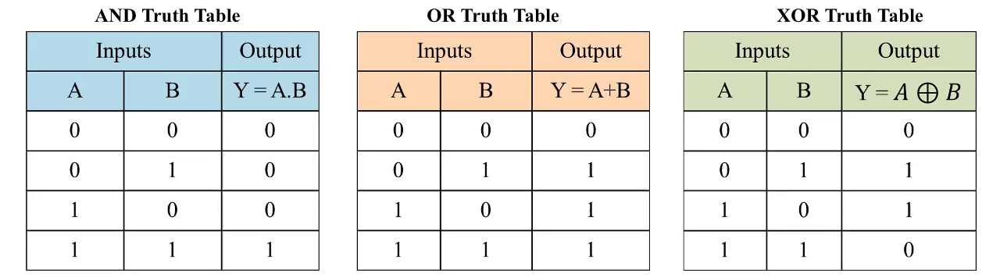

JAVA
Lógica de Programação
Sumário 1
Sobre
Iniciado em Junho de 1991 por James Gosling, Mike Sheridan e Patrick Naughton o projeto da linguagem Java foi desenvolvido, inicialmente, para a televisão interativa, e lançado em 1995 como um componente central da plataforma Java da Sun Microsystems.
O desenvolvimento de aplicações passar por um problema bastante incômodo para quem financia os projetos, pois para cada sistema diferente em que eles querem que seu produto esteja disponível era preciso lidar com especificidades de cada arquitetura.
Daí veio o Java, que é uma linguagem de programação orientada a objeto e projetada para permitir aos desenvolvedores programarem uma vez e terem seu programa executado em diversos dispositivos (o famoso "Write once, run anywhere").
A evolução da maior parte das tecnologias Java são feitas através de JSR (Java Specification Request), que são ideias debatidas por pessoas importantes da área cujo resultado pode ser conferido através do site https://www.jcp.org/ (Java Community Process).
Beleza, mas quem usa Java?
A tecnologia Java é empregada em diversas empresas através de aplicações que precisam de velocidade, lidar com concorrência, robustez e produtividade.
Abaixo estão alguns exemplos:

Dentro dessas e de outras empresas é possível achar a tecnologia Java sendo usada desde aplicações web até automações e equipamentos hospitalares.
Como ele funciona?
O código Java é compilado para bytecode que, por sua vez, é interpretado pela JVM. Quem deve se preocupar com a plataforma onde o código será executado, são os desenvolvedores da máquina virtual.


Compilado?
Compilado é o nome que se dá ao código processado por um Compilador, que é um programa que "traduz" o código de uma linguagem de programação para linguagem de máquina ou para uma a ser interpretada.
JVM?
A JVM é (Java Virtual Machine) é um programa que sabe interpretar e executar um programa Java (já em bytecode)
Fluxo do compilador
Compilador

Fluxo da JVM
JVM

Anatomia JDK 8
Diretórios da JDK
jdk1.8.0
bin
java*
javac*
javap*
javah*
javadoc*
lib
tools.jar
dt.jar
jre
bin
java*
lib
applet
ext
jfxrt.jar
localdata.jar
fonts
security
sparc
server
client
rt.jar
charsets.jar
/jdk1.8.0 Root directory of the JDK software installation. Contains copyright, license, and README files. Also contains src.zip, the archive of source code for the Java platform.
/jdk1.8.0/bin Executables for all the development tools contained in the JDK. The PATH environment variable should contain an entry for this directory.
/jdk1.8.0/lib Files used by the development tools. Includes tools.jar, which contains non-core classes for support of the tools and utilities in the JDK. Also includes dt.jar, the DesignTime archive of BeanInfo files that tell interactive development environments (IDEs) how to display the Java components and how to let the developer customize them for an application.
/jdk1.8.0/jre Root directory of the Java Runtime Environment (JRE) used by the JDK development tools. The runtime environment is an implementation of the Java platform. This is the directory referred to by the java.home system property.
/jdk1.8.0/jre/bin Executable files for tools and libraries used by the Java platform. The executable files are identical to files in /jdk1.8.0/bin. The java launcher tool serves as an application launcher (and replaced the earlier jre command that shipped with 1.1 releases of the JDK). This directory does not need to be in the PATH environment variable.
/jdk1.8.0/jre/lib Code libraries, property settings, and resource files used by the JRE. For example rt.jar contains the bootstrap classes, which are the run time classes that comprise the Java platform core API, and charsets.jar contains the character-conversion classes. Aside from the ext subdirectory, there are several additional resource subdirectories not described here.
/jdk1.8.0/jre/lib/ext Default installation directory for extensions to the Java platform. This is where the JavaHelp JAR file goes when it is installed, for example. This directory includes the jfxrt.jar file, which contains the JavaFX runtime libraries and the localedata.jar file, which contains the locale data for the java.text and java.util packages. See The Extension Mechanism at http://docs.oracle.com/javase/8/docs/technotes/guides/extensions/index.html
/jdk1.8.0/jre/lib/security Contains files used for security management. These include the security policy java.policy and security properties java.security files.
/jdk1.8.0/jre/lib/sparc Contains the .so (shared object) files used by the Oracle Solaris release of the Java platform.
/jdk1.8.0/jre/lib/sparc/client Contains the .so file used by the Java HotSpot VM client, which is implemented with Java HotSpot VM technology. This is the default Java Virtual Machine (JVM).
/jdk1.8.0/jre/lib/sparc/server Contains the .so file used by the Java HotSpot VM server.
/jdk1.8.0/jre/lib/applet JAR files that contain support classes for applets can be placed in the lib/applet/ directory. This reduces startup time for large applets by allowing applet classes to be preloaded from the local file system by the applet class loader and provides the same protections as though they had been downloaded over the Internet.
/jdk1.8.0/jre/lib/fonts Font files used by the platform.
Fim da Aula 1
O que é Lógica?
Segundo a Filosofia
Parte da filosofia que trata das formas do pensamento em geral (dedução, indução, hipótese, inferência etc.) e das operações intelectuais que visam à determinação do que é verdadeiro ou não.
Segundo a Informática
Organização e planejamento das instruções, assertivas etc. em um algoritmo, a fim de viabilizar a implantação de um programa.
Certo, mas e o que é algoritmo?
É uma sequência de passos que visam atingir um objetivo bem definido.

Exemplo de algoritmo no mundo real

Finalmente, uma IDE!
IDE ou Integrated Development Environment (Ambiente de Desenvolvimento Integrado) é um programa feito para fazer outros programas. Este tipo de software provê uma série de ferramentas e facilidades para que os desenvolvedores possam ter foco em programar sua aplicação.
A que utilizaremos no curso se chama Eclipse. É uma das mais conhecidas ferramentas de desenvolvimento do ecossistema Java e é open-source e gratuita.

As variáveis
Variável é um contêiner que abriga um valor que pode ser usado dentro de um programa. Seu valor pode ser alterado conforme o andamento da aplicação.
Toda variável precisa ter um TIPO.
Exemplos de variáveis de um programa Java:
saldo;
cartaoDeCredito;
correntista;
Boas Práticas
- Nomes de variáveis descritivos e camelCase (ex.: minhaVariavelLegal);
- Nome deve começar com letras minúsculas, $ ou _;
- Nome deve ser um substantivo, exceto em caso de booleanos, que geralmente são escritos em forma de pergunta (ex.: ehValido, temDependencia)
Constantes (primitivas)
Constante funciona quase como uma variável: ela pode conter um valor dentro do programa, mas ele é imutável.
Uma vez definido seu valor, este não poderá mudar!
Exemplos de constantes de um programa Java:
PI;
NUMERO_SALA;
CODIGO_DE_ACESSO;
Boas Práticas
- Nomes de constantes descritivos e caixa-alta;
- A separação dos nomes deve ser feita por underlines ( _ )
- Nome deve ser um substantivo, exceto em caso de booleanos, que geralmente são escritos em forma de pergunta (ex.: ehValido, temDependencia)
Tipos do Java

Operadores
-
Aritmético (+, -, *, /, %)
- "+" soma dois números ou concatena Strings
- "-" subtrai um número por outro
- "*" multiplica um número por outro
- "/" divide um número por outro
- "%" divide um número por outro e retorna o resto da divisão
-
Atribuição (=, +=, -=, *=, /=, %=)
- "=" -> x = y: Atribui o valor de y para x
- "+=" -> x += y: Realiza a operação x = x + y
- "-=" -> x += y: Realiza a operação x = x - y
- "*=" -> x += y: Realiza a operação x = x * y
- "/=" -> x += y: Realiza a operação x = x / y
- "%=" -> x += y: Realiza a operação x = x % y
Operadores
-
Relacional (==, !=, <, <=, >, >=)
- "==" Compara valores
- "!=" Compara se os valores são diferentes
- "<" Compara se um valor é menor que o outro
- "<=" Compara se um valor é menor OU igual ao outro
- ">" Compara se um valor é maior que o outro
- ">=" Compara se um valor é maior OU igual ao outro
-
Lógico (&&, ||, !)
- "&&" Retorna verdadeiro somente se ambos os lados da comparação forem verdadeiros
- "||" Retorna verdadeiro se um dos lados da comparação for verdadeiro
- "!" Serve para inverter o valor de algum booleano
-
Decremento/Incremento(--, ++)
- "--" -> --x: Retorna o resultado APÓS realizar o decremento
- "--" -> x--: Retorna o resultado ANTES de realizar o decremento
- "++" -> ++x: Retorna o resultado APÓS realizar o incremento
- "++" -> x++: Retorna o resultado ANTES de realizar o incremento
Tabela Verdade
Estruturas
Uma estrutura é uma unidade básica de lógica de programação; cada estrutura é uma sequência, seleção ou laço (loop).
Sequência
É uma estrutura na qual todos os comandos são executados em ordem, sem desvios.
x = 2;
y = 4;
z = x + y;
Estruturas
Seleção/Decisão
A instrução "IF" serve para separar o fluxo do programa em diversas partes. Caso uma expressão seja "VERDADEIRA", o código que está dentro do bloco será executado. Caso contrário, não.
if (condicaoVerdadeira) {
// código
}
A instrução "ELSE" serve para oferecer um caminho alternativo caso o resultado da expressão dentro do "IF" tenha sido "FALSO".
if (condicaoVerdadeira) {
// código
} else {
// código alternativo
}
A instrução "ELSE IF" serve para que uma outra expressão seja avaliada caso o resultado das anteriores tenha sido "FALSO".
if (condicaoVerdadeira) {
// código
} else if (outraCondicaoVerdadeira) {
// código de outra condicao
}
Estruturas
Seleção/Decisão
A instrução "SWITCH" tem funcionamento bem parecido com "IF/ELSE IF":
switch (valor) {
case alto:
// código
break;
case baixo:
// código
break;
default:
// código
break;
}
Esta instrução aceita os tipos primitivos: byte, short, char e int;
Também aceita os tipos: String, Enum e as classes Wrappers.
Arrays
Arrays (Vetores) em Java são estruturas de dados que comportam diversos valores (diferentes ou não) com o mesmo tipo de dado.
// Declarando
int vetor[];
int[] vetor;
// Inicializando
int vetor[] = new int[5];
int[] vetor = {1,2,3,4,5};
//...em caso de Objetos
String vetor[];
String[] vetor;
// Inicializando
String vetor[] = new String[5];
String[] vetor = new String[] {""};
String[] vetor = {""};
Estrutura
Laço/Repetição (Looping)
No laço WHILE, você coloca uma expressão ou variável cujo resultado é um boleano. Enquanto esse resultado for verdadeiro, o laço continua. É preciso colocar uma condição de saída em algum lugar dentro do laço!
while (condicaoVerdadeira) {
...
}
Este laço é usado quando você quer que o while rode ao menos uma vez.
do {
...
} while (condicaoVerdadeira);
Estrutura
Laço/Repetição (Looping)
Outra forma de repetir uma parte de código é pelo laço FOR. Geralmente ele é recomendado por sua organização e se você sabe o número de iterações que vão acontecer.
for (int i = 0; i > 10; i++) {
...
}
for (int i = 0; i > 10; i++): Inicialização de uma variável.
for (int i = 0; i > 10; i++): Fornecemos uma condição de continuidade do loop (enquanto a expressão retornar verdadeiro, o loop continua).
for (int i = 0; i > 10; i++): Incrementa a variável do início.
Este último laço é feito especialmente para iterar sobre Coleções. Assunto que será abordado mais à frente.
for (item : itens) {
...
}
Coleção
Coleção é um tipo de estrutura do Java que nos ajuda a lidar com diversos tipos de conjunto de dados.

Lists
Lista é uma estrutura ordenada e expansível de elementos. Possui implementações diferentes (exemplos abaixo) para cada situação.
É importante salientar a diferença entre TAMANHO e CAPACIDADE de uma lista:
Tamanho é o número de elementos que a lista contém.
Capacidade é a quantidade de elementos que ela pode conter.
ArrayList
Ela funciona, basicamente, como um array, com índices para cada elemento. As operações de inserção no final da lista e a operação "get" é bem rápida. CONCLUSÃO: Use caso você tenha que ficar realizando buscas na sua lista.
Sets
Set (Conjunto) é uma estrutura que agrupa diversos elementos do mesmo tipo, mas que não se repetem e não garantem ordem específica.
HashSet
É a implementação mais simples dos Sets, servindo para propósitos gerais.
Maps
Map (Mapa) é uma estrutura que agrupa diversos elementos na forma de "chave/valor", onde o primeiro parâmetro representa o tipo a ser usado como chave e o segundo, o valor (quase como um array). Esse esquema permite buscar os elementos (dado que você já possua a chave dele) de forma muito rápida. A chave JAMAIS pode ser repetida, mas
HashMap
É a implementação mais básica de Map. Permite usar valores nulos para chave ou valor.
Exceções e o bloco try/catch/finally
Às vezes as coisas não ocorrem exatamente como o esperado...
Fluxos de exceção podem acontecer por diversas causas, como tentar chamar um método em uma referência nula ou tentar converter uma frase com apenas letras em número. Para esses casos, usamos o bloco try/catch(e às vezes, finally), para capturarmos essas exceções e tratarmos de alguma forma.
try {
// codigo perigoso
} catch (Exception e) {
// codigo salvador
//... ou nao
} finally {
// independente do que acontecer, o codigo aqui dentro sempre vai ser executado
}
Conversão entre tipos
No Java existem dois tipos de dados: primitivo e referência. Primitivos são: int, long, float, boolean, etc. Já as referências podem ser Classes, Interfaces e arrays.
As conversões entre eles podem ser:
Implícitas
Elas acontecem sem que você precise dar um comando específico. A própria JVM e compilador cuidam disso. Como por exemplo:
int num1 = 10;
double num2 = 2;
num1 / num2; // Acaba gerando um double
Explícitas
Nestas é preciso que o programador "diga" em qual tipo ele quer que a variável se transforme (também conhecido como "casting").
int num1 = 10;
double num2 = (double) num1;
Conversão entre tipos
Expansão (Widening)
Esse tipo de conversão acontece quando o tipo da variável a guardar o resultado é MAIOR que os usados para realizar as operações. Como por exemplo:
int num1 = 10;
long num2 = 2;
long resultado = num1 + num2;
Estreitamento (Narrowing)
Esse tipo de conversão acontece quando o tipo da variável a guardar o resultado é MENOR que os usados para realizar as operações. Como por exemplo:
long num1 = 10;
long num2 = 1;
int resultado = num1 + num2;
Conversão entre tipos
Assignment (Atribuição)
double x;
int y = 50;
x = y; // y é convertido para double
Arithmetic promotion (Promoção Aritmética)
int num1 =7;
double num2 = 24;
double divisao = num1 / num2; //num1 também é convertido para double
byte b = 5;
byte++; //byte é convertido para int, e então o ++ é realizado
Method call (Chamada de método)
float f = 1.234f
double d = Math.cos(f); //método cos() espera double, então f é convertido para double
Métodos
É uma coleção de comandos agrupados para realizar uma operação. A sentença declarativa dele é chamada de assinatura. Um método pode manter o mesmo nome, mas não pode repetir: tipo do retorno, nome e parâmetros. Algo nessa lista anterior precisa diferir. A este processo chamamos de Sobrecarga.
Parâmetro: Variáveis no método! Argumento: Valor que é passado na chamada do método!
public static void main(String[] args) {
}
- public static: modificadores;
- void: tipo de retorno;
- main: nome do método;
- String[]: tipo de argumento do método;
- args: variável que aponta para o argumento;
- {}: é chamado de corpo do método.
Recursão
Enquanto um método chamar outro é uma prática bastante comum, isso abre a possibilidade de um método chamar ele próprio! A esta ação chamamamos de recursão.
É uma técnica que exige (normalmente) maior poder computacional do que um loop, por exemplo, mas para alguns problemas esse gasto é pequeno perto do benefício que temos ao escrever menos código.
Exemplos comuns:
- Fatoriais
- Sequencia de Fibonacci
- Potenciação
Fim
/